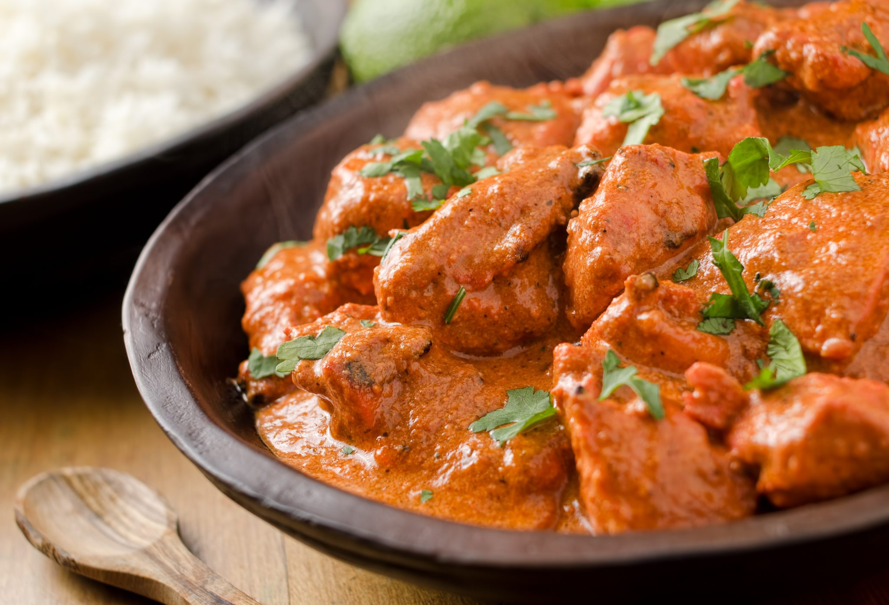
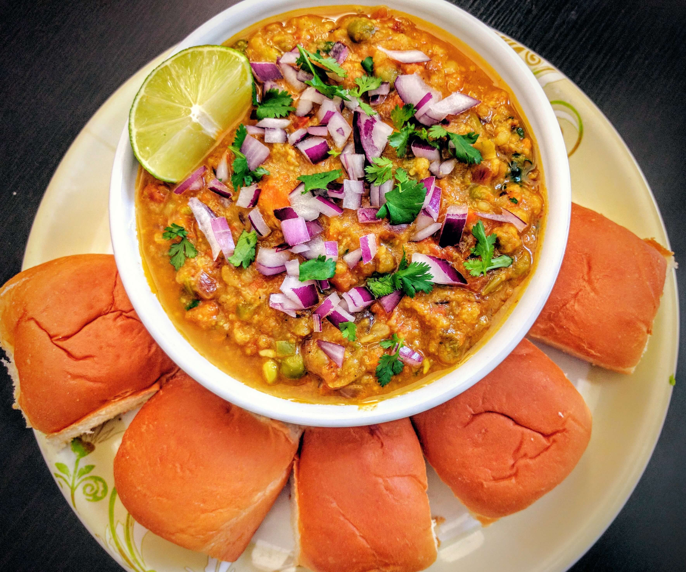

Pizza

Pizza is a traditional Italian dish consisting of a yeasted flatbread typically topped with tomato sauce and cheese and baked in an oven. It can also be topped with additional vegetables, meats, and condiments, and can be made without cheese.
Butter Chicken
Butter Chicken is a dish, from the Indian subcontinent, of chicken in a mildly spiced curry sauce.
Pav Bhaji
Pav bhaji is a fast food dish from India, consisting of a thick vegetable curry, fried and served with a soft bread roll.